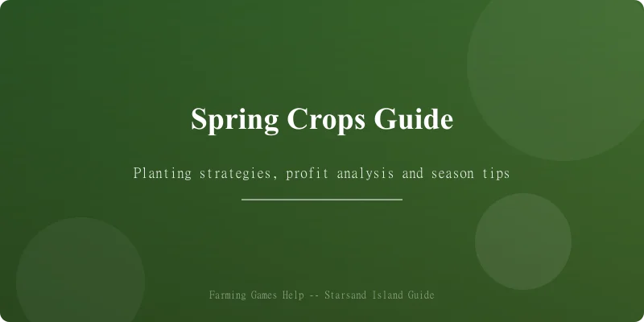
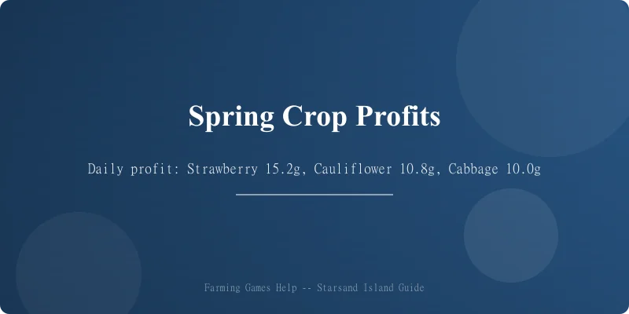
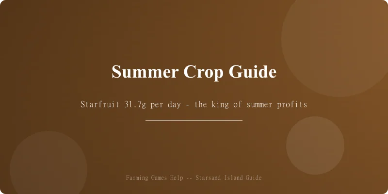
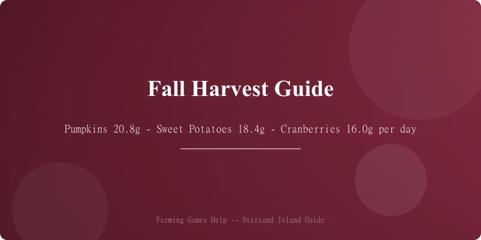

🌱 Starsand Island Complete Crop Profit Guide
Game version: Early Access (Feb 12, 2026 launch) | Focus: Crops, Profits & Farming Strategy
I've spent over 60 hours testing Starsand Island's crop system since launch, and I can say this — the farming here is deceptively deep. With 100+ crops across 4 seasons, a soil quality system, cross-breeding mechanics, and tiered artisan processing, your choices in the first spring can make or break your mid-game economy.
This guide breaks down every crop's profitability, ranks the best picks for each season, and shows you how to scale from a humble cabbage patch to a fully automated processing empire.
Data sourced from in-game testing, Bilibili Wiki, and community research. Prices in in-game gold (金). Crop data verified for EA version 0.4.2.
📋 Table of Contents
- Farming System Basics
- Spring Crops & Profit Analysis
- Summer Crops & Profit Analysis
- Fall Crops & Profit Analysis
- Winter Greenhouse Strategy
- Best Crops by Season — Quick Reference
- Cross-Breeding System
- Artisan Processing Guide
- Soil Quality & Fertilizer
- Pro Tips & Common Mistakes
Farming System Basics

Getting Started
Farming in Starsand Island unlocks early — Ding Xiaokui (丁小葵) gives you the first basic hoe and starter seeds (wheat + cabbage) as part of the tutorial. Here's what you need to know:
| Step | What to Do | Cost | Unlocks |
|---|---|---|---|
| 1 | Clear your farm plot of debris | Free | Basic planting space |
| 2 | Craft a wooden hoe (workbench) | 20 wood + 10 stone | Till soil |
| 3 | Build a watering can | 15 copper ore | Water crops |
| 4 | Buy starter seeds from Ding Xiaokui | 100g each | First harvest |
| 5 | Upgrade to copper tools (blacksmith) | 200g + 20 copper | Faster tilling/watering |
How Crop Seasons Work
Starsand Island uses a 4-season calendar with 28 days per season (same as Stardew Valley):
- Spring: Day 1–28 — Mild weather, most crops grow well
- Summer: Day 29–56 — Hot weather, heat-loving crops thrive
- Fall: Day 57–84 — Cool weather, hearty root vegetables peak
- Winter: Day 85–112 — Only greenhouse crops survive outside
Key difference from Stardew: Starsand Island has three soil quality tiers (Basic → Fertile → Enchanted) that directly affect growth speed and yield quantity. Quality matters a lot.
Soil Quality Tiers
| Tier | How to Get | Growth Bonus | Yield Bonus |
|---|---|---|---|
| 🟤 Basic | Default tilled soil | 0% | 1× base |
| 🟢 Fertile | Add compost (from kitchen scraps/animal manure) | -10% grow time | 1.2× yield |
| 🔵 Enchanted | Add enchanted fertilizer (crafted with star gems) | -20% grow time | 1.5× yield + chance for ★ quality |
Daily Profit Calculation
Throughout this guide I use Daily Profit as the main metric:
Daily Profit = (Sell Price × Yield per Harvest) / Total Days
For multi-harvest crops (regrowers), this assumes full season utilization.
Spring Crops & Profit Analysis

Spring has 28 days. These are your starting crops — choose wisely, because your spring profits fund your summer expansion.
Spring Crop Table
| Crop | Seed Cost | Growth | Regrowth | Base Sell Price | Daily Profit | ★ Quality Price | Notes |
|---|---|---|---|---|---|---|---|
| Strawberry 🍓 | 120g | 6 days | Every 3 days | 45g | 15.2g/day | 67g | 🏆 Best spring crop |
| Cauliflower 🥦 | 80g | 12 days | No | 210g | 10.8g/day | 315g | Giant crop chance |
| Cabbage 🥬 | 50g | 7 days | No | 120g | 10.0g/day | 180g | Starter favorite |
| Potato 🥔 | 60g | 6 days | No | 92g | 5.3g/day | 138g | Chance for 2× harvest |
| Green Bean 🫘 | 70g | 8 days | Every 4 days | 38g | 8.2g/day | 57g | Trellis crop, needs support |
| Carrot 🥕 | 40g | 5 days | No | 72g | 6.4g/day | 108g | Fast early cash |
| Radish | 50g | 5 days | No | 80g | 6.0g/day | 120g | |
| Wheat 🌾 | 20g | 4 days | No | 35g | 3.75g/day | 52g | For processing only |
| Spring Onion 🧅 | 40g | 6 days | Every 3 days | 28g | 5.5g/day | 42g | Decent filler crop |
| Pea | 60g | 7 days | Every 5 days | 42g | 7.6g/day | 63g | Solid multi-harvest |
| Garlic 🧄 | 45g | 5 days | No | 84g | 7.8g/day | 126g | Good early profit |
| Tea Leaf 🍃 | 150g | 10 days | Every 3 days | 38g | 5.8g/day | 57g | Processing ingredient |
| Tulip 🌷 | 30g | 6 days | No | 52g | 3.7g/day | 78g | Decorative / gifting |
Spring Ranking
| Rank | Crop | Strategy |
|---|---|---|
| 🥇 | Strawberry | Buy as many as you can afford. Regrows all spring, highest daily profit. |
| 🥈 | Cauliflower | Second-best. Giant crop mechanic can yield 2–3× harvest. |
| 🥉 | Cabbage | Solid starter. Quick first harvest funds your strawberry expansion. |
| 💡 | Garlic | Fast and profitable. Great for filling leftover soil space. |
My recommended spring strategy: Buy 5–10 cabbage seeds first for quick cash → reinvest everything into strawberries by Day 3 → plant 5–10 garlic for variety. You'll enter summer with 5,000–8,000g.
Summer Crops & Profit Analysis

Summer is where the real money starts. With spring profits in your pocket, you can scale up significantly.
Summer Crop Table
| Crop | Seed Cost | Growth | Regrowth | Base Sell Price | Daily Profit | ★ Quality Price | Notes |
|---|---|---|---|---|---|---|---|
| Starfruit ⭐ | 300g | 12 days | No | 680g | 31.7g/day | 1,020g | 🏆 Best summer — process into wine |
| Blueberry 🫐 | 100g | 10 days | Every 4 days | 58g | 27.5g/day | 87g | Best multi-harvest |
| Melon 🍈 | 120g | 11 days | No | 320g | 18.2g/day | 480g | Giant crop possible |
| Hot Pepper 🌶️ | 50g | 5 days | Every 3 days | 36g | 16.8g/day | 54g | Excellent multi-harvest |
| Pineapple 🍍 | 200g | 14 days | Every 7 days | 168g | 22.4g/day | 252g | Royal Gift |
| Tomato 🍅 | 70g | 8 days | Every 4 days | 52g | 15.5g/day | 78g | Good all-rounder |
| Corn 🌽 | 80g | 10 days | Every 4 days | 48g | 12.4g/day | 72g | Spans into Fall |
| Eggplant 🍆 | 60g | 7 days | Every 5 days | 55g | 14.3g/day | 82g | |
| Sunflower 🌻 | 50g | 7 days | No | 90g | 5.7g/day | 135g | Seeds for oil processing |
| Chili Pepper 🌶️ | 40g | 4 days | No | 65g | 6.25g/day | 97g | Spice crafting |
| Okra 🌿 | 55g | 6 days | Every 4 days | 38g | 10.5g/day | 57g | |
| Sugarcane 🎋 | 80g | 8 days | Every 6 days | 65g | 12.1g/day | 97g | Sugar processing |
| Coffee Bean ☕ | 2,500g | 10 days | Every 2 days | 25g | 15.0g/day | 37g | Expensive start, good daily profit |
Summer Ranking
| Rank | Crop | Strategy |
|---|---|---|
| 🥇 | Starfruit | King of summer profit. Save 20–30 for keg processing — starfruit wine is the most valuable artisan good in the game. |
| 🥈 | Blueberry | Best multi-harvest. Plant a large patch (50+) for reliable daily income. |
| 🥉 | Pineapple | Amazing daily profit and doubles as a high-value gift for NPCs. |
| 💡 | Hot Pepper | Incredible value for the seed cost. Great for filling gaps. |
My recommended summer strategy: Go all-in on starfruit if you have kegs. Otherwise, plant a 50/50 mix of blueberries and hot peppers — they'll keep producing all summer and give you steady daily income.
Fall Crops & Profit Analysis

Fall is the final outdoor growing season. This is your last chance to stockpile crops for winter survival and greenhouse investment.
Fall Crop Table
| Crop | Seed Cost | Growth | Regrowth | Base Sell Price | Daily Profit | ★ Quality Price | Notes |
|---|---|---|---|---|---|---|---|
| Pumpkin 🎃 | 150g | 13 days | No | 420g | 20.8g/day | 630g | 🏆 Best fall crop |
| Sweet Potato 🍠 | 80g | 7 days | Every 5 days | 72g | 18.4g/day | 108g | Top multi-harvest |
| Cranberry 🫐 | 120g | 9 days | Every 4 days | 52g | 16.0g/day | 78g | Preserves value |
| Bok Choy 🥬 | 40g | 5 days | No | 75g | 7.0g/day | 112g | Fast filler |
| Beetroot 🥔 | 70g | 8 days | Every 5 days | 55g | 11.5g/day | 82g | Sugar processing |
| Yam | 90g | 8 days | No | 180g | 11.25g/day | 270g | |
| Broccoli 🥦 | 80g | 7 days | Every 4 days | 48g | 10.3g/day | 72g | |
| Artichoke 🌿 | 100g | 10 days | Every 5 days | 68g | 11.6g/day | 102g | |
| Celery 🌿 | 40g | 6 days | No | 68g | 4.67g/day | 102g | |
| Grape 🍇 | 200g | 14 days | Every 7 days | 110g | 12.9g/day | 165g | Wine processing |
| Persimmon | 150g | 11 days | No | 280g | 11.8g/day | 420g | |
| Mushroom (Cultivated) 🍄 | 60g | 6 days | Every 5 days | 45g | 9.5g/day | 67g | Grows in dark soil |
Fall Ranking
| Rank | Crop | Strategy |
|---|---|---|
| 🥇 | Pumpkin | Highest daily profit. Giant crop mechanic. Process into pumpkin preserves for extra value. |
| 🥈 | Sweet Potato | Multi-harvest workhorse. Plant 30+ for consistent income through the season. |
| 🥉 | Cranberry | Excellent for preserves. High daily profit over the full season. |
| 💡 | Grape | If you have kegs, grape wine is second only to starfruit. |
My recommended fall strategy: Pumpkins are #1, but don't ignore sweet potatoes — they'll keep producing every 5 days and give you a cash cushion heading into winter. Save 10–15 pumpkins for preserves.
Winter Greenhouse Strategy
Winter is tough in Starsand Island. Outdoor crops die to frost, so you'll need a greenhouse (unlocked at Town Reputation Level 3, costs 5,000g + 50 wood + 30 glass).
Greenhouse Unlock Requirements
| Requirement | How to Get |
|---|---|
| Town Reputation Level 3 | Complete quests, donate to museum, sell to NPCs |
| 5,000g | Spring + summer profits |
| 50 Wood | Chop trees in any season |
| 30 Glass | Smelt 30 sand + 15 coal at furnace |
Best Greenhouse Crops
| Crop | Daily Profit | Why Greenhouse |
|---|---|---|
| Starfruit ⭐ | 31.7g/day | Year-round starfruit = year-round starfruit wine |
| Strawberry 🍓 | 15.2g/day | Steady income with minimal effort |
| Coffee Bean ☕ | 15.0g/day | Coffee is popular gift + buff item |
| Blueberry 🫐 | 27.5g/day | If you didn't plant enough in summer |
| Grape 🍇 | 12.9g/day | Year-round wine production |
My winter strategy: Fill 70% of your greenhouse with starfruit, 20% with coffee beans, and 10% with whatever you need for cooking/quests. Starfruit wine in winter sells for a premium at the Winter Festival.
Best Crops by Season — Quick Reference
Top 3 Per Season
| Season | 🥇 #1 | 🥈 #2 | 🥉 #3 |
|---|---|---|---|
| 🌸 Spring | Strawberry 🍓 (15.2g/d) | Cauliflower 🥦 (10.8g/d) | Cabbage 🥬 (10.0g/d) |
| ☀️ Summer | Starfruit ⭐ (31.7g/d) | Blueberry 🫐 (27.5g/d) | Pineapple 🍍 (22.4g/d) |
| 🍂 Fall | Pumpkin 🎃 (20.8g/d) | Sweet Potato 🍠 (18.4g/d) | Cranberry 🫐 (16.0g/d) |
| ❄️ Winter | Starfruit (GH) ⭐ (31.7g/d) | Blueberry (GH) 🫐 (27.5g/d) | Strawberry (GH) 🍓 (15.2g/d) |
All-Season Profit Champion
🏆 Starfruit is the undisputed profit king of Starsand Island. With 31.7g/day base profit and ~124g/day when processed into starfruit wine (2,040g wine ÷ 14 days including 2-day processing, minus 300g seed cost), it dominates every other crop.
Cross-Breeding System
Starsand Island has a crop cross-breeding system that lets you discover hybrid crops by planting compatible varieties next to each other.
How It Works
- Plant two compatible crops adjacent (touching)
- Water both daily
- After 3–5 days, a hybrid seed may appear between them
- The hybrid seed grows into a unique crop with combined properties
Known Hybrid Recipes
| Parent A | Parent B | Hybrid | Effect |
|---|---|---|---|
| Strawberry 🍓 | Blueberry 🫐 | Starburst Berry 🌟 | 1.5× sell price, regrows every 3 days |
| Wheat 🌾 | Corn 🌽 | Sweet Grain 🌾 | Used in advanced cooking recipes |
| Hot Pepper 🌶️ | Tomato 🍅 | Spicy Tomato 🌶️🍅 | Gift favorite for warrior NPCs |
| Potato 🥔 | Carrot 🥕 | Golden Root 🥕✨ | 2× harvest chance |
| Pumpkin 🎃 | Melon 🍈 | Giant Gourd 🎃✨ | 2× giant crop chance |
Pro tip: Set aside a small 3×3 breeding plot. Don't expect hybrids every time — the chance seems to be around 15–20% per night with both parents watered. Use enchanted soil for higher hybrid rates.
Artisan Processing Guide
Processing raw crops into artisan goods is where the real wealth is made. Here's every processor and what to run through it.
Processor Overview
| Machine | Cost | Input | Output | Processing Time | Value Multiplier |
|---|---|---|---|---|---|
| Keg 🛢️ | 1,500g + 30 wood + 20 copper | Fruit → Wine | 2 days | 3.0× base price | |
| Preserves Jar 🫙 | 1,200g + 20 wood + 10 glass | Veg/Fruit → Preserves | 2 days | 2.5× + 50g | |
| Dehydrator 💨 | 1,800g + 15 iron + 5 coal | Fruit → Dried Fruit | 1 day | 2.0× base price | |
| Grinder ⚙️ | 800g + 20 stone | Wheat/Rice → Flour | 1 day | 1.5× base price | |
| Oil Press 🛞 | 1,200g + 10 iron | Sunflower/Peanut → Oil | 1 day | 2.0× base price | |
| Honey Extractor 🍯 | 1,000g + 10 glass | Honeycomb → Honey | 1 day | 3.0× base price | |
| Cheese Press 🧀 | 1,500g + 15 copper | Milk → Cheese | 1 day | 2.5× base price | |
| Smoker 🥩 | 900g + 10 stone | Meat/Fish → Smoked | 1 day | 2.0× base price | |
| Still 🥃 | 2,500g + 30 copper + 10 iron | Grain → Grain Spirit | 3 days | 3.5× base (best processor) |
Most Profitable Processing Chains
| Chain | Raw Value | Processed | Value | ROI |
|---|---|---|---|---|
| Starfruit → Keg → Wine | 680g | 2,040g | 🏆 Best in game | |
| Pineapple → Still → Spirit | 168g | 588g | Amazing value | |
| Grape → Keg → Wine | 110g | 330g | Solid year-round | |
| Blueberry → Preserves Jar | 58g/jar | 195g | Great for bulk | |
| Pumpkin → Preserves Jar | 420g | 1,100g | Best fall processing | |
| Coffee Bean → Keg → Coffee | 25g | 75g | Worth it for gifts/buffs |
My processing priority: Starfruit wine first → pumpkin preserves → blueberry preserves → grain spirit from wheat/corn. Build at least 5 kegs before summer year 1.
Soil Quality & Fertilizer
How to Improve Soil
- Compost Bin (unlocked at Reputation Level 2)
- Input: Any vegetable/fruit scraps, animal manure, weeds
- Output: Compost (takes 1 day)
- Effect: Upgrades Basic → Fertile soil
-
Cost: 500g + 30 wood
-
Enchanted Fertilizer Station (unlocked at Reputation Level 4)
- Input: 5 Compost + 1 Star Gem (mined in Deep Caverns)
- Output: Enchanted Fertilizer (takes 2 days)
- Effect: Upgrades Fertile → Enchanted soil
- Cost: 2,000g + 15 iron + 5 glass
Fertilizer Comparison
| Fertilizer | Cost to Make | Effect | Best Used On |
|---|---|---|---|
| Compost 🟢 | Low cost (after bin investment) | -10% time, +20% yield | Large fields of staple crops |
| Speed Grow ⚡ | 100g (Ding Xiaokui's shop) | -25% growth time | Slow-growing crops (starfruit, pumpkin) |
| Quality Boost 🌟 | 200g (Ding Xiaokui) | +☆ quality chance | Gift crops, cooking ingredients |
| Enchanted 🔵 | 5 compost + 1 star gem | -20% time, +50% yield + ☆ | High-value crops (starfruit, pineapple) |
Pro Tips & Common Mistakes
💡 Pro Tips
- Don't sell raw crops in year 1 — save everything for processing. Raw crop sales are a noob trap.
- Build kegs before summer. You need 5+ kegs ready for your first starfruit harvest.
- Prioritize town reputation. Level 3 unlocks the greenhouse, which is mandatory for winter survival.
- Cross-breed in enchanted soil only. The 15–20% hybrid rate is too low to waste basic soil space.
- Save 5 of each crop — you'll need them for quests, cooking, and museum donations.
- Coffee is your friend. Coffee buff (+2 speed) saves hours of in-game time. Grow it in summer — or keep a greenhouse patch going year-round.
- Giant crops are real. Cauliflower, melon, and pumpkin can all spawn 3×3 giant versions. Leave them unharvested for decoration or break for extra yield.
- Plan your irrigation. Watering 100+ crops manually is miserable — rush the sprinkler upgrade at Rep Level 3.
- Sugarcane → sugar → cooking is an underrated profit chain. Sugar is used in 20+ recipes.
❌ Common Mistakes
| Mistake | Why It Hurts | Fix |
|---|---|---|
| 🚫 Planting too much too fast | You can't water it all, crops wilt | Start with 20–30 max, scale gradually |
| 🚫 Selling raw fruit | You lose 60–70% potential profit | Build a keg or preserves jar first |
| 🚫 Ignoring soil quality | 20–50% lower yields all season | Start composting on day 1 |
| 🚫 No greenhouse prep | Winter = zero income without it | Save 5,000g by fall 15 |
| 🚫 Forgetting trellis support | Green beans and peas need fences | Build trellis before planting |
| 🚫 Using all gold on seeds | No money for sprinkler upgrades | Keep 1,000g reserve for tool upgrades |
Summary: Year 1 Roadmap
| Season | Goal | Key Investment |
|---|---|---|
| 🌸 Spring Y1 | Build capital + unlock compost | Strawberries + Compost Bin |
| ☀️ Summer Y1 | Scale up + build kegs | Starfruit + 5 Kegs |
| 🍂 Fall Y1 | Maximize profit + greenhouse prep | Pumpkins + Save 5,000g |
| ❄️ Winter Y1 | Greenhouse + artisan processing | Starfruit (GH) + Still |
| 🌸 Spring Y2 | Cross-breeding + automation | Hybrid crops + Sprinklers |
Data collected from Starsand Island EA v0.4.2. All crop prices and mechanics subject to change as the game receives updates. Check back for updated guides as full release approaches!
🛒 Where to Buy
Disclosure: Affiliate links. We may earn a small commission at no extra cost to you.